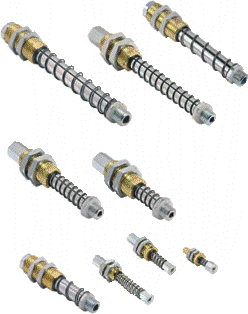

Применение: Достоинства
- Захват изделий с разной высотой (например, неровные металлические листы)
- Захват очень хрупких изделий (например, стеклянные листы) или изделия с нежёсткой поверхностью

- Пружинные плунжеры оказывают малое давление на поверхность захватываемого изделия, что обеспечивает мягкий контакт присоски с поверхностью нежёстких изделий, и хорошее компенсирование изменения высоты изделий
- Широкий диапазон диаметров и ходов.
- Доступна серия противоповоротных плунжеров для использования с овальными присосками.